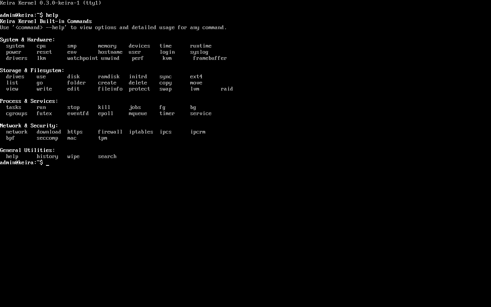
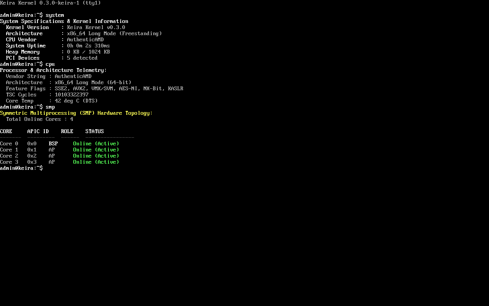
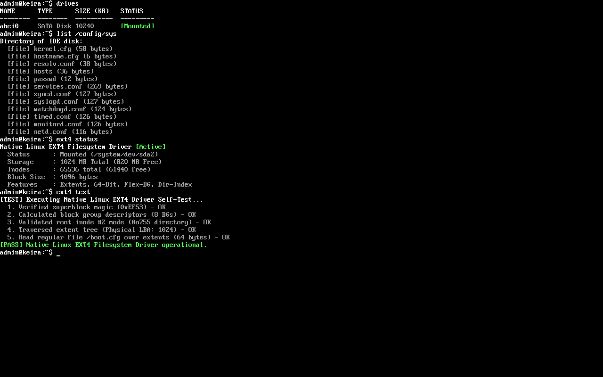
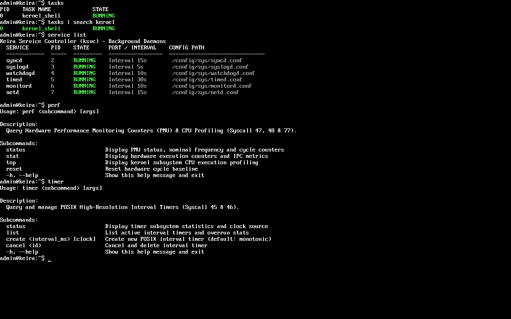
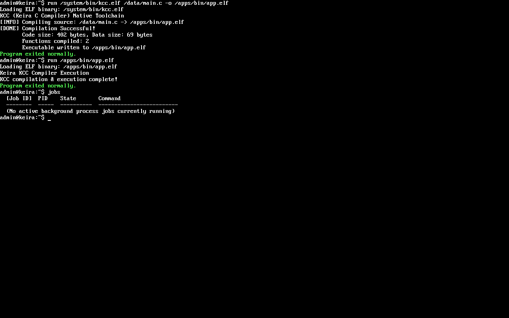
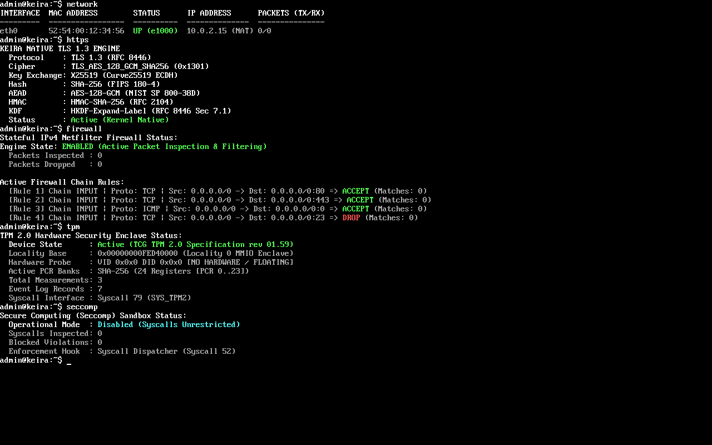
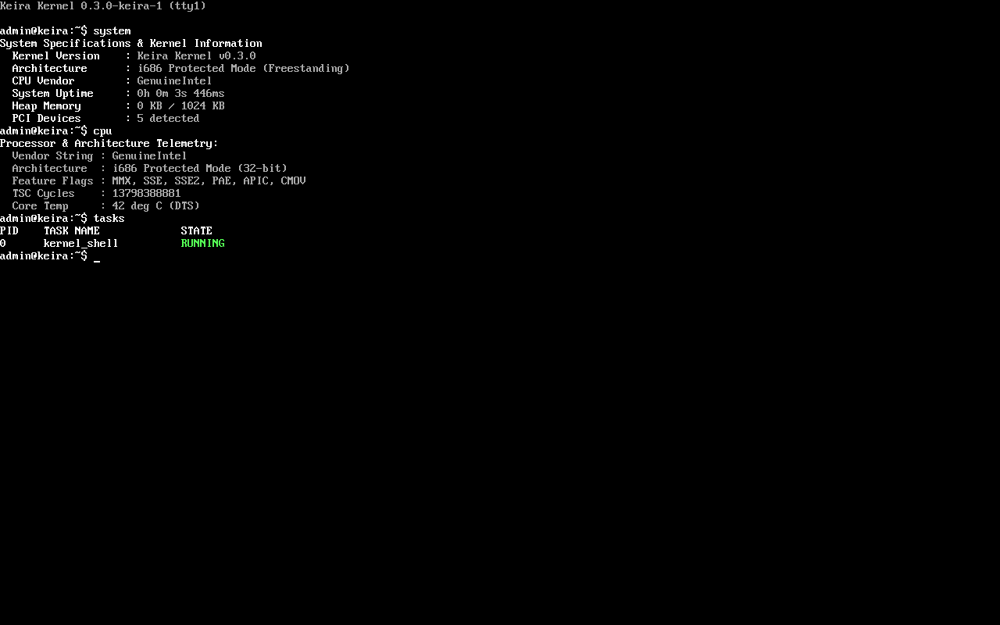

Memory and Task • crates/mem and task
Memory and Scheduling
Bitmap PMM, 4 level paging, heap, DMA and swap. Preemptive scheduler with cgroups and POSIX signals and documented scheduler tick.
x86_64 and i686 • Rust • C99 • Assembly • GPL 2.0 only
A freestanding bare metal kernel for x86_64 and i686 written from scratch in Rust, C99 and Assembly and booting via Multiboot2.
Hyper modular with 12 crates, 30k plus LOC and 13 documentation domains. Preemptive scheduling, 4 level paging, multi-core SMP and Ring 3 isolation with 62 syscall vectors and 78 built-in commands.
make test-allreproducible dual architecture build

Architecture
Six focused subsystems with explicit crate boundaries and documented Safety contracts. Each crate has a dedicated docs domain.
Bitmap PMM, 4 level paging, heap, DMA and swap. Preemptive scheduler with cgroups and POSIX signals and documented scheduler tick.
TCP/IP with native TLS 1.3, firewall and eBPF and cBPF with Seccomp filtering plus KVM framework. AES GCM and Curve25519.
VFS with FAT12/16/32, EXT4 read only, USTAR initrd, LVM and RAID with 16 slot LRU sector cache.
VGA and VBE, UART, PCI/PCIe with MSI, AHCI, NVMe, USB and Intel e1000 with Virtio net. Multi-core SMP topology, hardware watchpoints and telemetry.
Validated user copying, Ring 3 isolation, ELF loader and POSIX compatible dispatcher.
In kernel C compiler kcc.elf and C SDK, shell with 78 built-in commands and kvi editor for native development on bare metal.
Live Evidence
Not mockups — direct captures from Keira running on QEMU. Drag to scroll or use arrow keys.






Documentation
Start from the docs map and dive into any subsystem. Every crate has a matching guide.
Background
Keira is an independent project by Moh. Ananda Firmansyah Putra, Systems Architect and Certified Security Researcher specializing in low level systems programming and post quantum cryptography. It was created to learn operating system internals from first principles and to share a reproducible, well documented bare metal kernel with the community.
Open source under GPL 2.0 only. Designed for study, experimentation and collaboration.
Quick Start
Dual arch ISO and disk images in one command. Tested on QEMU.
git clone https://github.com/mrvlous/keira
cd keira
make test-all # x86_64 and i686
make run # QEMUCopy with one click — code block is interactive